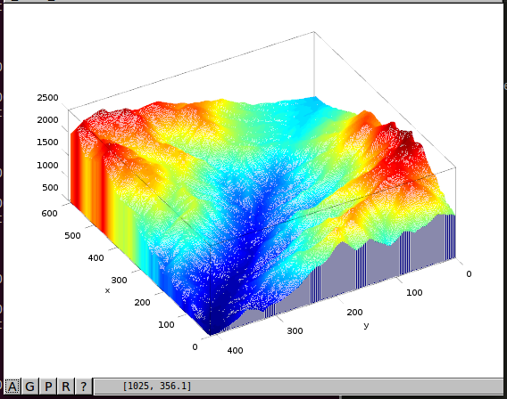

Manual de introducción a GNU-Octave¶
{kind=link}
- Primeros pasos con Octave
- Vectores y Matrices
- Funciones predefinidas en Octave
- Programación en Octave
- Polinomios
- Ejercicios resueltos
- Gráficos con Octave
- Lectura y escritura de ficheros de texto
- Utilidades
- Personalización del arranque de Octave
- Tortugas y fractales
- Modelos Digitales de Elevaciones
- Acceso a recursos de Internet
- Utilización de clases java desde Octave
Acerca de este documento¶
Este documento ha sido creado en Septiembre de 2014 por Santiago Higuera, profesor de informática de la Escuela de Ingenieros de Caminos de Madrid (España).
El objetivo es crear un manual de introducción a la utilización de GNU Octave. Se está realizando como material de apoyo a las clases de la asignatura Informática del primer curso de los estudios de Grado en Ingeniería Civil y Territorial que se imparten en la Escuela de Ingenieros de Caminos, Canales y Puertos de Madrid.
La documentación está realizada con la herramienta Sphinx y el código fuente está alojado en Github. Si estás interesado en colaborar en la elaboración del manual, puedes ponerte en contacto con el autor por correo electrónico a santiago.higuera@upm.es.
Licencia¶
Excepto donde quede reflejado de otra manera, la presente documentación se halla bajo licencia Creative Commons Reconocimiento Compartir Igual